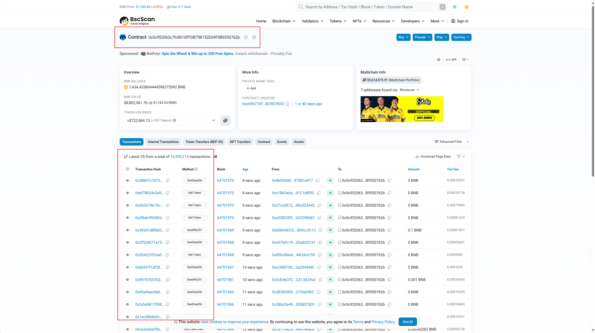
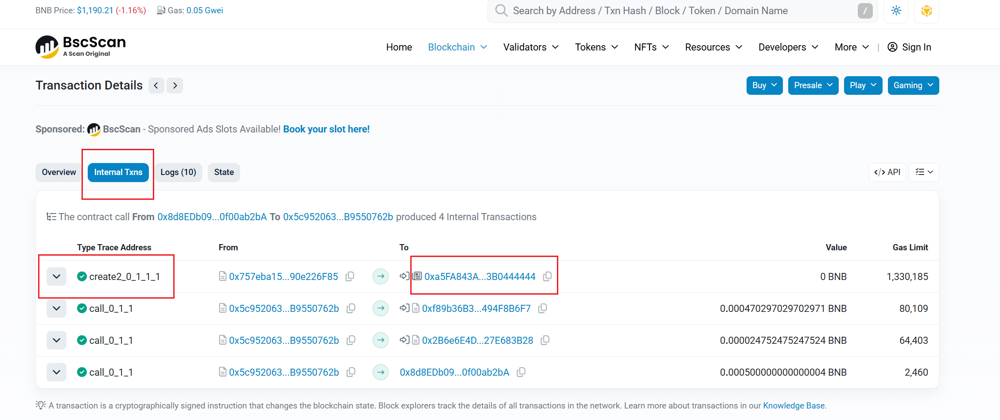
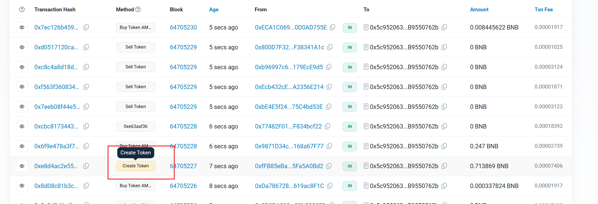

Python的web3库的简单案例
为什么要做这个
- Python的web3库的练习
- 最近BSC的MEME很火，写这个工具玩一玩
工具准备
- Python
- Etherscan官网注册获取免费API
设计思路
-
很容易找到FOUR的工厂合约地址：
0x5c952063c7fc8610FFDB798152D69F0B9550762b -
查看这条哈希，然后在
Internal Txns内部交易中找到CREATE方法的调用，就说明这笔交易创建了一个新代币，在交易的To值里，找到新代币的合约地址。  -
所以代码的执行思路：
1.轮询BSC的区块，找到 To 是FOUR工厂合约的哈希。
2.提取每个哈希里的 Internal Txns 交易，如果里面有CREATE方法的调用，那么这次交易则创建了一个新代币，代币的合约地址就是 To 的地址。
3.调用代币合约的方法，获得代币的名称。
代码实现
轮询区块，找到 To 为工厂合约的哈希
for tx in block['transactions']:
if tx['to'] and tx['to'] == FACTORY_ADDRESS:
txStr = '0x' + str(tx['hash'].hex())
print(f"检查交易:{txStr}")
new_addrs, error = v2_internal_txns(txStr)
检查哈希的 Internal Txns 里是否有CREATE的函数调用，如果有，获取 To 的合约即为新代币合约地址
def v2_internal_txns(tx_hash, use_batch=False):
"""使用Etherscan V2 API获取Internal TXNs（chainid=56）"""
url = "https://api.etherscan.io/v2/api" # V2统一端点
...
else:
# 单tx
params = {
'chainid': 56,
'module': 'account',
'action': 'txlistinternal',
'txhash': tx_hash,
'apikey': ETHERSCAN_API_KEY
}
try:
response = requests.get(url, params=params)
print(f"DEBUG: V2 URL: {url}, 状态码: {response.status_code}")
print(f"DEBUG: 响应内容: {response.text[:300]}...") # 截断调试
if response.status_code != 200:
return [], f"HTTP {response.status_code}: {response.text}"
data = response.json()
if data.get('status') == '1' and 'result' in data:
new_addresses = []
for txn in data['result']:
contractAddr = txn.get('contractAddress', '') # e.g., "create2_0_1_1_1"
txn_type = txn.get('type', '').lower()
to_addr = txn.get('to', '')
if txn_type == 'create2' and to_addr == '' and contractAddr:
new_addresses.append(Web3.to_checksum_address(contractAddr))
return new_addresses, None
else:
return [], f"API错误: {data.get('message', '未知')}"
except json.JSONDecodeError as e:
return [], f"JSON解析失败 (可能是404/非JSON): {response.text[:100]} - {str(e)}"
except Exception as e:
return [], f"V2 API调用失败: {str(e)}"
检查代币的合约地址，获取代币的名字
def is_bep20_token(contract_address):
"""验证BEP-20代币"""
try:
if w3.eth.get_code(contract_address) == '0x':
return False, "非合约地址"
contract = w3.eth.contract(address=contract_address, abi=BEP20_ABI)
name = contract.functions.name().call()
symbol = contract.functions.symbol().call()
return True, f"{symbol} ({name})"
except Exception as e:
return False, f"非BEP-20或调用失败: {str(e)}"
完整代码如下，其中ETHERSCAN_API_KEY需要更换成自己的API Key，去这里注册Etherscan官网注册获取免费API
from web3 import Web3
from web3.middleware import ExtraDataToPOAMiddleware
import time
import json
import requests
from hexbytes import HexBytes
# BSC RPC（测试debug_trace支持；若失败，换Ankr: https://rpc.ankr.com/bsc）
RPC_URL = 'https://bsc-dataseed1.binance.org/' # 或 'https://bsc.rpc.blxrbdn.com/' 支持trace
w3 = Web3(Web3.HTTPProvider(RPC_URL))
# 添加POA中间件,因为BSC有一部分POA网络血统,需要添加POA中间件
w3.middleware_onion.inject(ExtraDataToPOAMiddleware, layer=0)
# BEP-20验证ABI
BEP20_ABI = [
{"constant": True, "inputs": [], "name": "name", "outputs": [{"name": "", "type": "string"}], "type": "function"},
{"constant": True, "inputs": [], "name": "symbol", "outputs": [{"name": "", "type": "string"}], "type": "function"}
]
# FORM工厂地址
FACTORY_ADDRESS = '0x5c952063c7fc8610FFDB798152D69F0B9550762b'
# Etherscan/BscScan V2 API Key（免费：https://etherscan.io/myapikey 或 bscscan.com/myapikey）
ETHERSCAN_API_KEY = '' # 共享key
# BEP-20验证ABI
BEP20_ABI = [
{"constant": True, "inputs": [], "name": "name", "outputs": [{"name": "", "type": "string"}], "type": "function"},
{"constant": True, "inputs": [], "name": "symbol", "outputs": [{"name": "", "type": "string"}], "type": "function"}
]
def is_bep20_token(contract_address):
"""验证BEP-20代币"""
try:
if w3.eth.get_code(contract_address) == '0x':
return False, "非合约地址"
contract = w3.eth.contract(address=contract_address, abi=BEP20_ABI)
name = contract.functions.name().call()
symbol = contract.functions.symbol().call()
return True, f"{symbol} ({name})"
except Exception as e:
return False, f"非BEP-20或调用失败: {str(e)}"
def v2_internal_txns(tx_hash, use_batch=False):
"""使用Etherscan V2 API获取Internal TXNs（chainid=56）"""
url = "https://api.etherscan.io/v2/api" # V2统一端点
if use_batch:
# 批量：用address + 区块范围（更高效，避免单tx 404）
params = {
'chainid': 56, # BSC
'module': 'account',
'action': 'txlistinternal',
'address': FACTORY_ADDRESS, # 工厂地址
'startblock': '0',
'endblock': 'latest', # 或指定recent block
'page': 1,
'offset': 10, # 最近10笔
'sort': 'desc',
'apikey': ETHERSCAN_API_KEY
}
else:
# 单tx
params = {
'chainid': 56,
'module': 'account',
'action': 'txlistinternal',
'txhash': tx_hash,
'apikey': ETHERSCAN_API_KEY
}
try:
response = requests.get(url, params=params)
print(f"DEBUG: V2 URL: {url}, 状态码: {response.status_code}")
print(f"DEBUG: 响应内容: {response.text[:300]}...") # 截断调试
if response.status_code != 200:
return [], f"HTTP {response.status_code}: {response.text}"
data = response.json()
if data.get('status') == '1' and 'result' in data:
new_addresses = []
for txn in data['result']:
contractAddr = txn.get('contractAddress', '') # e.g., "create2_0_1_1_1"
txn_type = txn.get('type', '').lower()
to_addr = txn.get('to', '')
if txn_type == 'create2' and to_addr == '' and contractAddr:
new_addresses.append(Web3.to_checksum_address(contractAddr))
return new_addresses, None
else:
return [], f"API错误: {data.get('message', '未知')}"
except json.JSONDecodeError as e:
return [], f"JSON解析失败 (可能是404/非JSON): {response.text[:100]} - {str(e)}"
except Exception as e:
return [], f"V2 API调用失败: {str(e)}"
# 此功能实现有问题，暂时不用
def methodCheck(tx):
"""检查交易是否为CREATE2"""
try:
input_data = tx.get('input','0x')
if input_data == '0x' or len(input_data) < 10:
return False
method_id = '0x' + (input_data).hex()
if '519ebb10' not in method_id:
return False
return True
except Exception as e:
print(f"方法检查失败: {str(e)}")
return False
def monitor_factory_create2(last_block='latest'):
"""监控工厂交易，使用V2 API检测CREATE2"""
last_block_num = w3.eth.block_number if last_block == 'latest' else int(last_block)
current_block = last_block_num
while True:
if current_block > last_block_num:
print(f"检测到新区块: {current_block}")
block = w3.eth.get_block(current_block, full_transactions=True)
for tx in block['transactions']:
if tx['to'] and tx['to'] == FACTORY_ADDRESS:
txStr = '0x' + str(tx['hash'].hex())
print(f"检查交易:{txStr}")
new_addrs, error = v2_internal_txns(txStr)
if error:
#print(f"V2单tx失败: {error}")
continue
# 处理new_addrs...
for addr in new_addrs:
is_token, details = is_bep20_token(addr)
if is_token:
print(f"🚀 FORM CREATE2新代币: {addr}")
print(f" 详情: {details}")
print(f" 交易哈希: {tx['hash'].hex()}")
print(f" 区块: {current_block}")
print("-" * 50)
last_block_num = current_block
current_block = last_block_num + 1
time.sleep(3) # 轮询间隔
if __name__ == "__main__":
if not w3.is_connected():
print("❌ 无法连接BSC")
else:
print(f"✅ 开始监控FORM工厂 {FACTORY_ADDRESS} 的CREATE2部署（Etherscan V2 + chainid=56）...")
monitor_factory_create2()
后续优化
-
这个程序仅仅只能基本实现找到新代币的功能，和DEX上的那些扫链功能完全不能比，DEX基本上都是和FOUR平台合作的，应该有平台提供的专用API，我这里是为了学习Web3，使用的都是免费的公共的节点和API。
-
我在BscScan里看到每条哈希都有一个
Method字段，在浏览器里可以看到CreateToken的方法。所以我想在轮询工厂合约的哈希时，先将CreateToken的方法的哈希分离出来，再对这些哈希进行提取操作，可以提高查询速度。 但是尝试了一下，暂时没有找到代码里辨别Method的方法，肯定是可以做到的，只不过需要时间去测试，后续可以优化这一点。

- 公共的BSC节点很慢，然后Etherscan API的免费套餐也对每天的请求数量和速度有限制，如果有钱的话，可以买更好的套餐，还会有更方便的API可以使用。
版权声明： 如无特别声明，本文版权归 赛狗屁的技术空间 | 游戏 WEB 金融 所有，转载请注明本文链接。
（采用 CC BY-NC-SA 4.0 许可协议进行授权）
本文标题：《 Python实现监控BSC链上FOUR平台发射的代币 》
本文链接：https://saigoupi.github.io/web3/bscscan.html
本文最后一次更新为 天前，文章中的某些内容可能已过时！

游戏行业老兵 | Web开发新手 | 金融学徒